[CTR] 控制器
功能块 CTR 是通用 PID 控制器（P、PI、PD 或 PID），具有可选的外部跟踪。它提供调节操纵变量。
CTR 是通用 PID 控制器（P、PI、PD 或 PID），具有可选的外部跟踪功能。它提供调节操纵变量。
CTR 还有助于创建序列控制器和序列级联控制器。
- Sequence controller: One PID-CTR per sequence controller element; possibly one SEQLINK function block.
- Sequence cascade controller: One CTR per sequence controller element; additional CAS_CTR and possibly one SEQLINK function block.
如果输入值 [In] 在时间 t0 从 0 跳到 1，则输出 [Out]（在时间 t0：[Out] = 0）根据函数 1–e 发出指数响应
CTR 可用作：
- Universal P(I)(D) controller
- Universal PI(D) controller with tracking input
- Individual sequence controller element within a sequence control logic
- Primary or secondary controller within a cascade control logic
- The block controls variables such as temperature, pressure, or humidity
集成了以下功能：
- Gain, integral action time and derivative action time; can be configured separately
- Range of the manipulated variable is adjustable through the use of parameters for min. and max. controller output values
- Invertible manipulated variable
- Linkable control gain factor
- Adjustable, neutral zone for control errors
- Configurable bias (for P and PD controllers)
- Adjustable rise and fall time for the manipulated variable (0-100 %, 100- 0 %)
- Configurable control action type (direct inverted)
- Configurable P, PI, PD, PID, 2-position control or staged control
CtrMod | CtrTyp | |
|---|---|---|
PID | 上演 | |
|
Continuous | PID 控制（默认） 应用控制参数： 不相关的控制参数： | 舞台控制 应用控制参数： NumSts, HysSwiOn, HysSwiOff, SwiDly 不相关的控制参数： |
2-position | 强制 2 位控制 应用控制参数： 不相关的控制参数： | |

TV、Ti0to100、Ti100to0、Nz、YCtrOfs、HysSwiOn、HysSwiOff、SwiDly 和 CtrTyp 的配置可在 BACnet 对象上使用。 GainFac 的配置可在功能块输入上使用。 Gain、Tn、NumSts、YtctrMax 和 YCtrMin 的配置可用作功能块输入以及 BACnet 属性。如果输入已连接，则输入值用于这些参数，否则使用属性值。
PID controller – autonomous
如果控制类型 [CtrTyp] 设置为 PID、控制模式设置为 0 并且增益 [Gain] > 0，则 CTR 充当 P(I)(D) 控制器。
PID 控制器具有三个主要参数来配置控制响应：
- Gain [Gain]
- Integral action time [Tn]
- Derivative action time [Tv]
作为一个选项，可以使用可链接的增益因子 [GainFac] 来校正控制增益。这种校正或增益调度可能有助于控制空气处理单元中的混合空气风门，因为控制增益基于测量的温度。
以下各节介绍了 PID 控制器的其他控制参数及其效果。
Controller output range [YctrMin], [YctrMax]
控制器输出 [Yctr] 的范围由 [YctrMin] 和 [YctrMax] 指示。
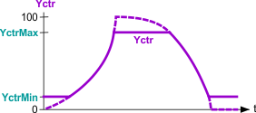
如果控制器设置为停止服务 [OoServ] = 1，则不考虑这些限制。
如果 [YctrMin] 大于 [YctrMax]，则控制器输出范围设置为 [YctrMax] 中的值，即 [Yctr] = min{[YctrMin], [YctrMax]}。作用于 [YctrMax] 的限制控制器可以强制控制器输出低于 [YctrMin]。相反，作用于 [YctrMin] 的限制控制器只能增加 [YctrMax] 上的控制器输出。
Controller direction of control action [Actg]
控制器的控制动作[Actg]方向决定了操纵变量[Yctr]和控制变量[Xctr]的关系。
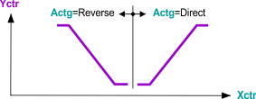
Direct：如果实际值[Xctr]增加，则控制器输出值[Yctr]增加，例如制冷、除湿。
Indirect：如果实际值[Xctr]增加，则控制器输出值[Yctr]减少，例如加热、加湿。
控制器输出 [Yctr] 也可以使用参数 [Inv] 反转。这可能是顺序控制所需要的。
Neutral zone [Nz]
中性区 [Nz] 是设定点周围的不敏感范围。如果设定点 [Sp] 和控制变量 [Xctr] 之间的差值在 7 个控制周期内小于中性区的 1/4，则控制器输出 [Yctr] 将被冻结。如果设定值 [Sp] 和控制变量 [Xctr] 之间的差值大于中性区的 1/2，则恢复控制操作。
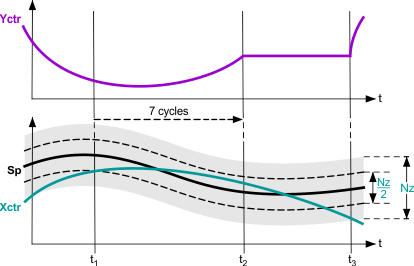
Controller output offset [YctrOfs].
如果控制器配置为 P 或 PD 控制器，则可以配置偏置或偏移量 [YctrOfs]。如果控制器已打开并且没有控制错误，则控制器输出将设置为 [YctrOfs] 的值。如果控制器配置为 PI 或 PID 控制器，则控制器偏移 [YctrOfs] 也用作积分器起始值。一旦控制器打开并开始控制，积分器值就会设置为 [YctrOfs] 中的值。
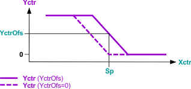
Controller output rise time [Ti0to100] or fall time [Ti100to0]
输出 [Ti0to100]、[Ti100to0] 限制调节变量 [Yctr] 的最大信号增加或信号减少。
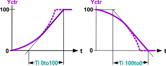
Inversion [Inv]
控制器输出 [Yctr] 的反转根据以下公式计算：
[Yctr]Inv = 100 % – [Yctr]NotInv
控制器输出限制 [YctrMin] 和 [YctrMax] 以及控制器输出上升时间 [Ti0to100] 和下降时间 [Ti100to0] 与反转控制器输出 ([Inv] = 1) 相关。如果控制器关闭（[EnFnct] = 0 且 [OoServ] = 0），则对于反转控制器，控制器输出 [Yctr] 也会设置为 0%。
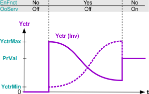
Control variable tracking [EnTrack]/[Track]
将有效操纵变量返回到输入 [Track] 可提高 PI 或 PID 控制器的控制质量（例如，抗饱和）。它被称为外部控制变量跟踪。
当 [EnTrack] = 0 时，跟踪被禁用，并且 [Track] 不被处理为跟踪信号。
当[EnTrack] = 1 时，启用跟踪并且将[Track] 作为跟踪信号进行处理。
如果限制逻辑直接作用于执行装置（例如，最小或最大选择），则控制器的定位信号不再影响执行装置。将有效定位信号返回到跟踪输入使控制器保持当前值，并保证在限制逻辑不再干预时继续控制。
如果为序列的控制器元件设置了外部跟踪，则必须确保可以达到设置的极限值 [YctrMin] 和 [YctrMax]。否则，只有在发生高控制错误时，顺序控制器才能切换到下一个顺序控制器元件。作为外部跟踪的替代方案，在限制应用的情况下可以直接影响限制值 [YctrMin] 和 [YctrMax]。
Control algorithm
无外部跟踪的 PID 控制算法框图：
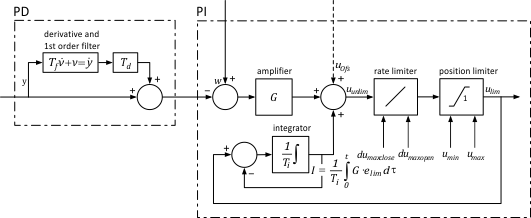
在 P 或 PD 控制器上，控制器输出偏移 uOfs用于积分器值。
带外部跟踪的 PID 控制算法框图：
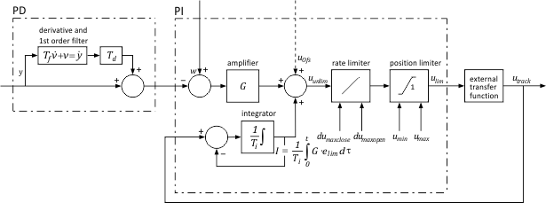
Stage control – Autonomous
当将控制类型 [CtrTyp] 设置为分级控制并将控制模式 [CtrMod] 设置为调制时，CTR 充当具有 [NumSts] 级的分级控制器。将 [CtrMod] 设置为 2 位控制会强制 CTR 进行 2 位控制，无论 [CtrTyp] 的设置如何。
2-position control
当将控制模式 [CtrMod] 设置为 2 位控制时，CTR 充当 2 位控制器。作为替代方案，可以通过将 [Gain] 设置为零来实现 2 位响应（这与 [CtrTyp] 处的设置无关，即对于 PID 和分级控制）。开关点由迟滞 [HysSwiOn] 和 [HysSwiOff] 以及控制动作 [Actg] 进行配置，请参见下图了解直接作用 2 位控制。
为了使控制器进行切换，控制变量必须超过相应的切换点，并且最后一次切换动作至少提前一个切换延迟时间 [SwiDly] 发生。
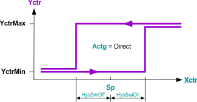
Stage control
若绝对控制误差|[Sp]-[Xctr]|大于开关迟滞，控制器会递增或递减输出，除非最后一个开关级比开关延迟 [SwiDly] 新。只要最后一次切换动作比切换延迟新，就不会执行分级切换。
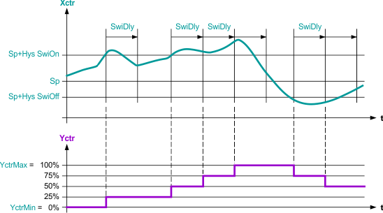
进行分级切换的绝对控制误差没有最小持续时间标准。
对于分级控制，控制器输出 [Yctr] 分级设置为变量 100%/[NumSts]（整数类型没有分级输出）。
例如，如果 [YctrMin] = 0% 且 [YctrMax] = 100% 且 [NumSts] = 4，则控制输出 [Yctr] 为 0%、25% 50% 75%，或100%。
[YctrMin] 和 [YctrMax] 的配置限制最小和最大阶段。如果提供的值与阶段值的百分比不完全匹配，则该函数将向上舍入到下一个阶段。
由控制器的比例部分覆盖的误差。
控制器偏移量 [YctrOfs] 不用于初始化阶段控制器。分级控制器也不处理跟踪输入[Track]。
Change control operating mode
Change from integrative to non-integrative control
如果通过将 [Tn] 设置为零而将 PI(D) 控制器更改为非积分控制器，则控制器的积分器值将设置为零。
如果将非集成控制器（P、PD、级或 2 位控制器）更改为 PI(D) 控制器，则控制器的现有积分器值将被接管并限制在 [YctrMin, YctrMax] 范围内。
Change between PID and stage control
如果 PI(D) 控制器更改为分级控制器，则实际控制输出 [Yctr] 立即舍入到下一级的输出。例如，如果 [NumSts] = 4，则值 [Yctr] = 69.3% 将向上舍入为 [Yctr] = 75%。之后，阶段控制算法继续。
对于积分作用时间 [Tn] > 0 的 2 位或多级控制器，内部值基于控制输出的内部跟踪，基于积分器值。如果在 PI(D) 控制器上更改 2 位或分级控制器，则使用跟踪积分器值。
如果需要平滑过渡，例如，对于早上增压加热的 2 位控制（最佳启动控制）和用于舒适的 PI(D) 控制之间的过渡，此过程通常是有益的。
Change between disabled and enabled controller
如果禁用控制器（[EnFnct] = 0、[OoServ] = 0），则控制器输出 [Yctr] 将设置为 0%，与 [Inv] 和其他控制器设置无关。
如果启用了 PI(D) 控制器，则积分器值从 [YctrOfs] 开始积分。根据上升时间和下降时间 [Ti0to100] 和 [Ti100to0]，控制器输出 [Yctr] 从 0% 或 [YctrMin]（如果 [YctrMin] > 0%）或 [YctrMax]（如果 [YctrMax < 0%）开始。
如果启用阶段控制器，则控制输出 [Yctr] 从 0% 开始（如果 0% 在 [YctrMin, YctrMax] 范围内）。否则，[Yctr] 开始间隔的边缘值。例如：如果 [YctrMin] = 15%、[YctrMax] = 70%、[NumSts] = 4，则控制输出 [Yctr] 从 25% 开始（[YctrMin] 向上舍入）。
Change between out of service and PID or stage control
如果控制器设置为停止服务，则控制器输出 [Yctr] 将设置为 BACnet 对象中当前属性的值。
如果 PI(D) 控制器从“停止服务”更改为“运行”，则积分器值将开始与当前属性的值进行积分。
如果级控制器从“停止服务”变为“运行”，则控制输出 [Yctr] 立即向上舍入到下一级输出。例如，如果 [NumSts] = 4，则值 [Yctr] = 69.3% 将向上舍入为 [Yctr] = 75%。之后，阶段控制算法继续。
PID and stage controllers – Sequence control
如果使用多个组件根据预定义的控制序列来控制受控变量，则使用序列控制。序列控制器根据控制序列切换各个序列控制器元件，并且在跨所有序列控制器元件的相互关联的控制响应中协调对各个控制器元件的控制。
顺序控制器主要用于空调系统中控制温度和湿度。没有理由不将顺序控制器用于其他应用程序中的控制主题。
Set up sequence controller
序列控制器由多个序列元素组成，其中所有序列元素都是功能块 CTR 的实例。序列元素的互连可以是直接的或通过SEQLINK.
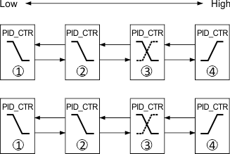
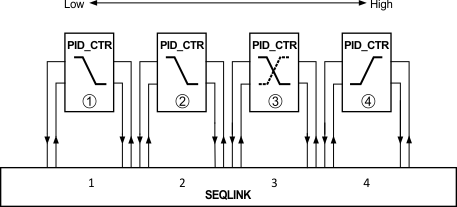
Communication signals between sequence elements
序列元素通过引脚之间的连接相互通信：[ToLower] > [FmHigher] 和 [ToHigher] > [FmLower]。
Control action of the sequence control elements
通常，顺序控制器由单独的 CTR 组成。每个 CTR 充当组件的序列控制元素。 CTR 功能块的互连顺序（从低到高）对应于顺序控制器的控制顺序 (1..n) 的顺序。因此，CTR 元件的连接必须考虑预期的工作范围（例如，用于加热）和切换顺序。
具有四个元素的顺序控制示例：
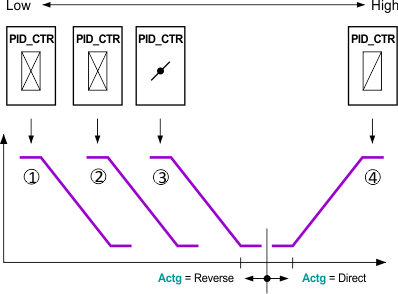
1 = 加热盘管（最低元件），2 = 预热器，3 = 风门，4 = 冷却器（最高元件）。
对于不断增加的热量需求，按以下顺序供暖：3 > 2 > 1。
对于不断增长的冷却需求，冷却由元件 4 提供（> 5 ...如果可用）。
最低序列控制元素对应于控制序列1，最高序列控制元素对应于控制序列n。最低序列控制元件使用反向控制动作（如果可用）来控制组件。最高顺序控制器元件使用直接控制操作（如果可用）来控制组件。
顺序控制器元件的控制动作 [Actg] 由受控组件的操作（例如加热、冷却）决定。如果某个部件的控制动作在运行过程中发生变化，则相应控制元件的控制动作也必须随之改变。下图中，元件3的控制动作发生了变化。如果受控组件请求反转信号，则可以使用控制器输出的反转 [Inv]。
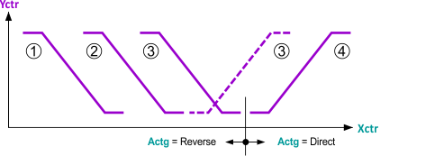
在控制顺序内，从最低顺序控制器元件到最高顺序控制器元件的控制动作 [Actg] 只能更改一次，并且只能从反向作用更改为正作用。如果不满足此要求，即如果控制动作参数化不正确，则错误的控制序列将被停用，并释放下一个有效的控制序列。错误参数化的顺序控制器元件设置 [ErSta] = 1。
故障控制序列元素通过 [TknSta] 中的令牌状态提供有关故障的信息。具有直接控制作用的元件提供 [TknSta] = Hel_CSeq（冷却序列中的加热元件），反向元件提供 [TknSta] = Cel_HSeq（加热序列中的冷却元件）。
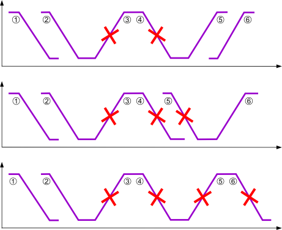
Setpoints for sequence control elements
在顺序控制器中，顺序控制器元件 (1...n) 的设定值 [Sp] 必须单调增加：
[Sp]1≤ [Sp]2≤ [Sp]3≤ ... ≤ [Sp]n
如果具有相同控制作用方向的控制序列具有相同的设定点，则可以确保从一个控制序列转换到另一控制序列时的调节控制。
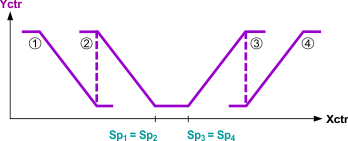
无能量区域由控制动作方向转换时的设定点定义（例如，加热设定点/cooling设定点）。
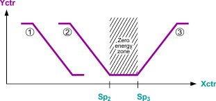
Sequence control algorithm
CTR中的顺序控制算法符合控制标准。涵盖以下主题：
- Coordination mechanism of the sequence control elements
- Control token passing and receiving for different controller types
- Examples and description of special cases, special mixing sequence, or special control parameter settings.
Control outputs
Manipulated variable [Yctr] and its parts [Yctrp], [Yctri], [Yctrd]
[Yctr] 表示主控制输出，通常指定执行器的位置。在 PID 控制器上，显示调节变量 [Yctr] 的部分以供诊断：
- Proportional part [Yctrp]
- Integral portion [Yctri]
- Derivative portion [Yctrd]
对于不具有受控变量所有部分的控制器类型，相应的输出设置为零。在没有控制任务（禁用、停止服务或非控制序列元素）的控制器上，控制部分设置为零。
Controller demand [CtrDmd]
[CtrDmd]向控制器提供控制需求。它是一个标准化信号，百分比范围从 0%（无需求）到 100%（最大需求）。如果控制器被禁用、停止服务 ([OoServ] = 1)、错误 ([ErSta] = 1) 或 [YctrMin] ≥ [YctrMax]，则 [CtrDmd] 设置为零。
否则，控制器根据 [EnFnct] 计算需求。
Controller demand calculation, if [EnFnct] = 1
控制器根据其有效控制器输出 [Yctr] 相对于控制输出限制 [YctrMin] 和 [YctrMax] 计算需求：
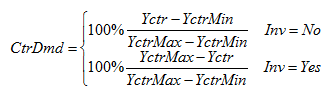
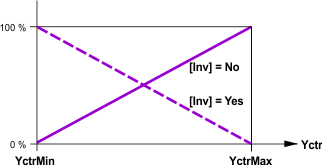
Controller demand calculation, if [EnFnct] = 0
在这种情况下，控制器根据控制误差和设置计算虚拟需求。对于独立 P(I)(D) 控制器，虚拟需求对应于控制输出的归一化 P 部分：
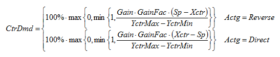
如果控制器具有独立 2 位控制或分级控制响应，则虚拟需求定义如下：
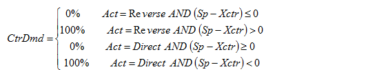
如果控制器是顺序控制器的一部分，则虚拟需求被校正，因为虚拟需求输出必须与整个顺序控制器兼容。进行了以下更正：
- The controller acts indirect ([Actg] = reverse), a low sequence control element has the control task and actively controls: CtrDmd = 100%.
- The controller acts direct ([Actg] = direct), a high sequence control element has the control task and actively controls: CtrDmd = 100%.
- The controller acts indirect ([Actg] = reverse), a high sequence control element has the control task and actively controls: CtrDmd = 0%.
- The controller acts direct ([Actg] = direct), a low sequence control element has the control task and actively controls: CtrDmd = 0%.
Displayed controller demand [CtrDmd]
如果满足控制需求计算标准，则控制器如上所述计算需求。根据输入[DmdMod]可以显示控制需求，如下：
- [DmdMod] = Off: Demand calculation switched off, [CtrDmd] = 0% regardless of the calculated demand CtrDmd.
- [DmdMod] = 2-position: [CtrDmd] = 0% if calculated CtrDmd = 0% or [CtrDmd] = 100% if calculated CtrDmd > 0%.
- [DmdMod] = Modulating: [CtrDmd] = CtrDmd (calculated).
Background sequence control
Sequence control requirements
基于顺序控制解决方案经验的要求：
- Setpoints must be configurable for each sequence element.
- The sequence element that starts control must be able to be specified.
- Each sequence element must be enabled or set to out of service.
- Each sequence element incudes an individual controller.
- The offset of the control output must be individually adjustable.
- Each sequence element has an individual, neutral zone.
Other requirements
- The sequence controller must be able to handle sections with direct and reverse control action consisting of one or more sequence control elements.
- Both (partial) sequences can consist of any number of sequence control elements.
- Setpoints can only be the same or increased from a lower to a high sequence control element.
- A control response can be configured as needed for each sequence control element: P, PI, PID, PD controller or staged controller including 2-position controller.
- Each PID sequence control element includes a controller.
- Each sequence control element must be able to be individually set to out of service.
- Only one sequence control element actively controls. All other elements are either disabled, out of service, faulty, or at the minimum or maximum output.
- Control parameters are configured individually per sequence control element.
- If all control parameters for a PID sequence controller have the same values (Sp, Gain, Tn, Tv), the sequence control response must be identical to the response from an individual controller.
- The control action for each sequence control element must be able to be configured and changed during runtime.
- The control output for each sequence control element must be able to be inverted.
- Each sequence control element must display the effective control state with the following states:
- CtrOff: The controller is switched off.
- CtrCmd: The controller is out of service or [YctrMax] ≤ [YctrMin].
- CtrOn: The controller is switched on and its control output [Yctr] is greater than [YctrMin] and less than [YctrMax].
- CtrMin: The controller is switched on and its controller output [Yctr] ist equal to [YctrMin].
- CtrMax: The controller is switched on and its controller output [Yctr] ist equal to [YctrMax].
- If the control output for the sequence control element reaches its minimum or maximum value, the control task is forwarded to the next (lower or higher) sequence element that is ready for control (enabled and no error or out of service).
Sequence control principles
顺序控制器原理：
- Only one sequence control element is actively controlled or has a control task.
- The control outputs for non-controlling sequence control elements are constant. Exception: When an element returns to operation or from enabled from disabled, the control output switches from minimum to maximum.
- Unavailable sequence control elements (disabled, out of service, faulty) forward communications to their neighboring elements.
该图显示了简化的操作原理：
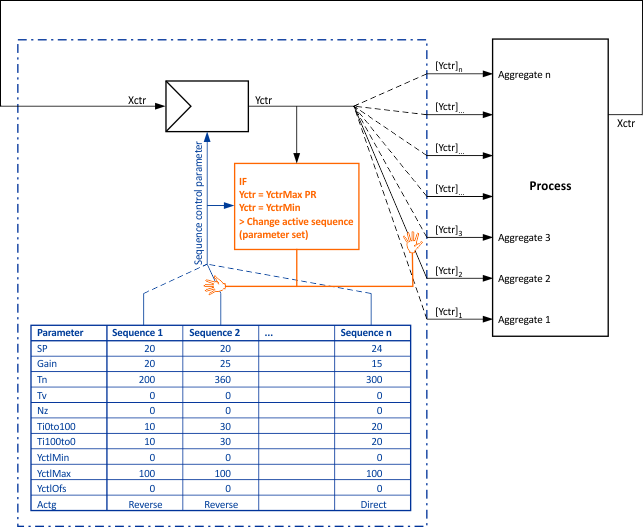
Object-internal alarms
如果为相应的 BACnet 对象启用了对象内部警报，则功能块可以访问相关属性以允许在发生事件时做出反应。
如果属性“事件状态”显示不常见事件，则输出 [OffNrml] 设置为 1。如果事件状态显示正常并且所有转换均已确认（读取属性“已确认转换”以接收转换状态），则输出设置为 0。如果无法访问 BACnet 对象或报告错误，则输出设置为 0。
如果识别出故障状态或非正常状态，则输出 [Dstb] 设置为 1；如果 BACnet 对象显示为正常并且确认转换为正常，则输出 [Dstb] 重置为 0。如果无法访问 BACnet 对象，则 [Dstb] 设置为 1。
如果识别出故障状态，则输出 [Flty] 设置为 1；如果状态为 BACnet 对象显示为正常并且确认转换为正常，则输出 [Flty] 设置为 0。如果无法访问 BACnet 对象，则 [Flty] 设置为 1。
如果由于达到上限而识别出非正常状态，则输出 [HiLmRd] 设置为 1；如果状态为 BACnet 对象显示为正常并且确认转换为正常，则输出 [HiLmRd] 设置为 0。如果无法访问 BACnet 对象或识别出故障状态，则 [HiLmRd] 设置为 0。
如果由于达到下限而识别出非正常状态，则输出 [LoLmRd] 设置为 1；如果状态为 BACnet 对象显示为正常并且确认转换为正常，则输出 [LoLmRd] 设置为 0。如果无法访问 BACnet 对象，则 [LoLmRd] 设置为 1。
输出 [Rlb] 提供 BACnet 对象上的属性“可靠性”值。
输入 [SupEvtDet] 和 [SupEvtNtf] 可以抑制事件检测或通知。输入的值将写入相应的属性：“抑制事件检测”和“抑制事件消息”。
如果输入已连接，则如果另一个源写入另一个值，则来自布线的值将重新写入该属性。如果多个功能块链接到同一个 BACnet 对象，则只有一个功能块可以连接到抑制输入。
Update interval
CTR 定期更新属性“更新间隔”。该属性的值指示 CTR 更新属性“当前值”的平均时间间隔。
CTR 功能块的默认配置（以技术单位表示的值）是为温度控制而设置的。如果功能块用于其他控制目的，例如，必须相应地修改工程单位和默认值。照明或湿度。
输入 | 描述 | 数据类型 | 默认值 |
|---|---|---|---|
EnFnct | Enable function 启用该功能。 | 布尔值 | 1 |
0 - 该功能被禁用。 | |||
Sp | Setpoint | 真实的 | 20.0 [°C] |
Xctr | Controller input | 真实的 | 20.0 [°C] |
GainFac | Gain factor | 真实的 | 1.0 |
Gain | Gain | 真实的 | 10.0 [%/K] |
Tn | Integral action time Tn | 时间 | 2m |
0ms：串级控制器有P控制响应。 | |||
YctrMax | Controller output maximum 最大控制器输出。 | 真实的 | 100 [%] |
YctrMin | Controller output minimum 最小控制器输出。 | 真实的 | 0 [%] |
Actg | Control action 确定操纵变量和控制变量之间的关系。 | 布尔值 | 1 |
0 - 直接效果，例如冷却或除湿。 | |||
CtrMod | Controller mode | 布尔值 | 0 |
0 - Continuous | |||
DmdMod | Demand mode | 整数 | 2: 2-position |
1: Off | |||
Inv | Inverse | 布尔值 | 0 |
0 - 控制器输出信号 [Yctr] 反转。 | |||
EnTrack | Tracking enable | 布尔值 | 0 |
0 - 禁用外部跟踪。 | |||
Track | Tracking 输入为有效控制输出值。 | 真实的 | 0.0 [%] 0.0…100.0 |
NumSts | Number of stages | 整数 | 1 0…4 |
FmHigher | From higher neighbor element | 结构 | - |
FmHigher | Control mode | 整数 | 1：无 |
1: Nil - Not connected（默认值）。 | |||
FmHigher | Sequence coordination | 整数 | 1：无 |
1: Nil - Not connected（默认值）。 | |||
FmHigher | Control token | 整数 | 1：无 |
1: Nil - Not connected（默认值）。 | |||
FmHigher | Is integrator | 布尔值 | 0 |
0 - 序列元素具有非集成行为（默认）。 | |||
FmHigher | Covered error 由控制器的比例部分覆盖的误差。 | 真实的 | 0.0 |
FmLower | From lower neighbor element | 结构 | - |
FmLower | Control mode | 整数 | 1：无 |
1: Nil - Not connected（默认值）。 | |||
FmLower | Sequence coordination CTR 协调信号。 | 整数 | 1：无 |
1: Nil - Not connected（默认值）。 | |||
FmLower | Control token | 整数 | 1：无 |
1: Nil - Not connected（默认值）。 | |||
FmLower | Is integrator. | 布尔值 | 0 |
0 - 序列元素具有非集成行为（默认）。 | |||
FmLower | Covered error 由控制器的比例部分覆盖的误差。 | 真实的 | 0.0 |
TshVal | Threshold value 用于控制功能块写入尝试的配置值。仅当值的变化大于或等于 [TshVal] 时才允许尝试。 Note | 真实的 | 0.1 |
SupEvtDet | Suppress event detection | 布尔值 | 0 |
SupEvtNtf | Suppress event notification | 布尔值 | 0 |
|
BaObjRef | BA-Object reference | 结构 | --- |
BaObjRef | Device identifier | 双字 | 16#3FFFFF |
BaObjRef | Object identifier | 双字 | 16#3FFFFF |
BaObjRef | Item identifier | 整数 | -1 |
输出 | 描述 | 数据类型 | 默认值 |
|---|---|---|---|
ErSta | Error state | 布尔值 | 0 |
CtrSta | Controller state | 整数 | 1: CtrOff |
1: CtrOff- 控制器关闭。 | |||
TknSta | Token state | 整数 | 1: NoTkn NoTkn…RTFault |
1: NoTkn - No token. | |||
Yctr | Controller output | 真实的 | 0.0 [%] |
Valid | Valid | 布尔值 | 0 |
0 - 未提供输入值，[Out] = [Init]。 | |||
CtrDmd | Controller demand | 单元。 | 0.0 [%] |
ToHigher | To higher neighbor element | 结构 | - |
ToHigher | Control mode | 整数 | 1：无 |
1: Nil - Not connected（默认值）。 | |||
ToHigher | Sequence coordination | 整数 | 1：无 |
1: Nil - Not connected（默认值）。 | |||
ToHigher | Control token | 整数 | 1：无 |
1: Nil - Not connected（默认值）。 | |||
ToHigher | Is integrator | 布尔值 | 0 |
0 - 序列元素具有非集成行为（默认）。 | |||
ToHigher | Covered error 由控制器的比例部分覆盖的误差。 | 真实的 | 0.0 |
ToLower | To higher neighbor element | 结构 | - |
ToLower | Control mode | 整数 | 1：无 |
1: Nil - Not connected（默认值）。 | |||
ToLower | Sequence coordination | 整数 | 1：无 |
1: Nil - Not connected（默认值）。 | |||
ToLower | Control token | 整数 | 1：无 |
1: Nil - Not connected（默认值）。 | |||
ToLower | Is integrator | 布尔值 | 0 |
0 - 序列元素具有非集成行为（默认）。 | |||
ToLower | Covered error 由控制器的比例部分覆盖的误差。 | 真实的 | 0.0 |
Yctrp | Controller output proportional part | 真实的 | 0.0 [%] |
Yctri | Controller output integral part | 真实的 | 0.0 [%] |
Yctrd | Controller output derivative part | 真实的 | 0.0 [%] |
OoServOut | Out of service, output | 布尔值 | 0 |
0 - No | |||
GainOut | Gain, output | 真实的 | 10.0 [%/K] |
TnOut | Integral action time Tn, output | 时间 | 2m |
TvOut | Derivative action-time Tv, output | 时间 | 0 ms |
NzOut | Neutral zone, output | 真实的 | 0.5 [K] 0.0…40.0 |
Ti0to100 | Rise time from 0 to 100% | 时间 | 1m |
Ti100to0 | Fall time from 100 to 0% | 时间 | 1m |
YctrMaxOut | Controller output maximum, output | 真实的 | 100.0 [%] 0.0 [%]…100.0 [%] |
YctrMinOut | Controller output minimum, output | 真实的 | 0.0 [%] 0.0 [%]…100.0 [%] |
YctrOfsOut | Controller output for offset, output | 真实的 | 0.0 [%] 0.0 [%]...100.0 [%] |
CtrTypOut | Controller type, output | 整数 | 1: PID controller |
1: PID controller | |||
HysSwiOnOut | Hysteresis switch-on, output | 真实的 | 0.5 [K] -100.0 [K]…100.0 [K] |
HysSwiOffOut | Hysteresis switch-off, output | 真实的 | 0.5 [K] -100.0 [K]…100.0 [K] |
SwiDlyOut | Switch-on/off delay, output | 时间 | 5m |
NumStsOut | Number of stages, output | 整数 | 1 1…10 |
Dstb | Disturbed [Dstb] 指示引用的 BACnet 对象是否处于故障状态或处于 OffNormal 状态。当 BACnet 对象返回正常状态时，[Dstb] 保留其值，直到确认转换到正常状态为止。 [Dstb] = 0，如果上述条件不满足 AND '确认的转换' = x, x, 1。 Note | 布尔值 | 0 |
Flty | Faulty [Flty] 指示引用的 BACnet 对象上的最后一个事件是否有错误。如果 BACnet 对象返回到正常状态，[Flty] 将保留其值，直到确认转换到正常状态为止。 [Flty] = 0，如果不满足上述条件 AND 以下可能性之一有效：
Note | 布尔值 | 0 |
HiLmRd | High limit reached 指示所引用的 BACnet 对象上的最后一个事件是否基于达到上限而处于非正常状态。当 BACnet 对象返回正常状态时，[HiLmRd] 保留其值，直到确认转换为正常状态为止。 [HiLmRd] = 0，如果不满足上述条件 OR 以下可能性之一有效：
Note | 布尔值 | 0 |
LoLmRd | Low limit reached 指示所引用的 BACnet 对象上的最后一个事件是否基于达到下限而处于非正常状态。如果 BACnet 对象返回正常状态，[LoLmRd] 将保留其值，直到确认转换为正常状态为止。 [LoLmRd] = 0，如果不满足上述条件 OR 以下可能性之一有效：
Note | 布尔值 | 0 |
Rlb | Reliability | 整数 | 0：未检测到故障 |
ErrCode | Error code indication | 整数 | 0: No error |
= 0 - No error | |||
Control structures
CTR 是一个通用控制元素，可用于广泛的控制问题。该元素可用于不同的控制结构，包括：
- Autonomous P(I)(D) controller
- Autonomous 2-position or stage control
- Limitation control: The output of the main control element is limited by a limitation controller that acts on the inputs of the main control elements [YctrMin] or [YctrMax].
- Cascade control: A main control variable is controlled by an out control loop controller that provides a setpoint for a supplementary control variable controller by the inner control loop.
- Sequence control: A control variable is controlled by multiple actuators (component) in a specific sequence
功能块在接通后的第一个控制周期内初始化。初始化周期后，该函数等待 3 个周期来消除不利的处理序列。然后假设通信输入 [FmLower] 和 [FmHigher] 的值有效，并且根据这些值执行该功能。
下图显示了功能块 CTR 的应用示例：空气处理机组的串级控制。顺序控制控制内部控制回路；它作用于加热盘管、冷却盘管和能量回收单元三个部件。外部控制电路通过顺序控制来控制室温。外部控制电路提供送风温度设定值以及调节通风信号。
内控制回路包括两个作用于外控制回路的通风控制器的限制控制器。如果无法通过最大加热或冷却来实现送风温度设定点，这可以防止通风控制增加风扇速度。
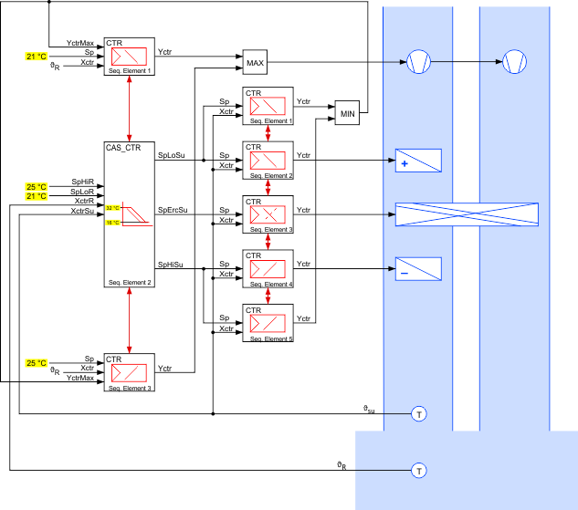